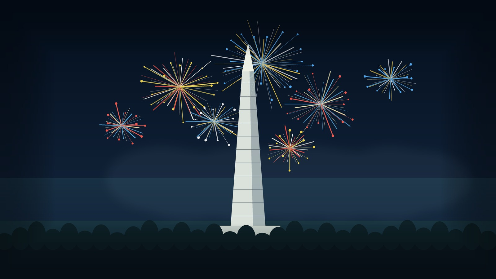

Wide safety frame
28mm
Best if crowds force you closer or you want the most sky. Keeps the full monument, large fireworks spread, and foreground breathing room.
- Full-frame FOV
- 65.5 x 46.4 degrees
- APS-C equivalent lens
- about 18mm